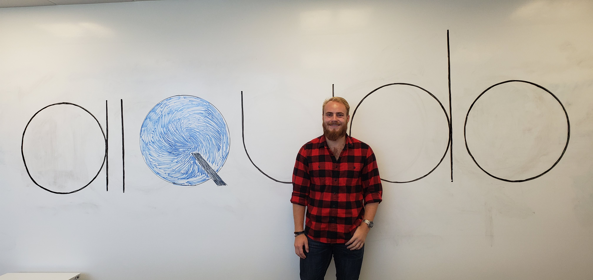

Jordans Blog
I Made A Website?!
First post after starting jordan-knox.org, July 8, 2020
Original Post
I started working on the website about, uuuuhhhh, two months ago?? I took a huge break though, so its only actually been about three weeks of work I'd guess. As I'm writing this blog post I have about half of the total work done. Hopefully I can finish soon and it'll work properly!
QTime: My Time as an Aiqudo Intern
Closing of summer internship blog post, Sept 12, 2019
Original posting located at https://www.aiqudo.com/2019/09/12/qtime/
When I started my internship at Aiqudo, I had next to no experience doing any of the things I was here to do. I came in to Aiqudo very scared that I was completely unqualified and that I would immediately make a fool of myself and get fired. But it was so much better than I had expected. As soon as I got here, I immediately felt welcome and like I was one of the team. I loved every bit of time I got to work here, and I’m so sad for it to end. While I was here, I learned more than I have throughout all of college so far. I learned an entirely new programming language and now feel more comfortable using that language than any of the others that I had been using for years! While I was here, I created a suite of useful Slack actions that went into production. We’ll write in more detail about Voice in Slack, but here are some examples of what’s now possible to do super-easily in Slack with simple voice commands: “send a message to John” “send a poll to the General channel asking what’s for lunch today” “post a gif about bananas” I don’t think I know anybody else who had a summer internship that led to them writing programs that actually went into production. Unlike all of them, I now have something that I can pull up on anybody’s phone and say “Hey look, I made that!” I got a ton of experience working with both backend stuff like RESTful APIs and data manipulation, but then I also got to do a lot with the frontend working with HTML/CSS and user interaction with computing systems. I learned more than just technical skills, like how startups function and how to work with over 15 people on a single project. All in all, this internship has been invaluable to me and I wouldn’t trade it for anything else. This opportunity has not only made me a better software engineer, but also made me a million times more confident in myself and my abilities. The people here are some of the best people that I have ever met and I cannot wait to start working here again part-time during the school year.